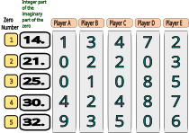

Decimal expansion refers to the representation of a number in decimal form, using a decimal point to separate the integer part of the number from its fractional part. The decimal expansion of a number can be obtained by dividing the number by powers of 10. For example, let's consider the number 1/3. Then we have the following repeating pattern,
However, for the famous constant pi (denoted as π), we have a more interesting decimal expansion, and is given by
It was shown by Lambert in 1760 that π is irrational and therefore the above decimal expansion will have no repeating pattern. The numbers occurring in the decimal expansion have been studied by many scientists for a long time. Due to this, there are many studies and research papers dedicated to the decimal expansion of pi. One can look at [1] for more details. On this page, we are interested in the numbers which represent the critical zeros of the Riemann zeta function ζ(s) (that is, those complex numbers s for which ζ(s) =0 where s is not a negative even integer). For those unfamiliar, these numbers are intimately linked with the distribution of prime numbers. For the sake of the interest of the reader let us remind you that finding the location of all the critical zeros will allow you to earn one million dollars. The first critical zero of ζ(s) has a real part equal to 1/2 and imaginary part whose decimal expansion is given by
This was first calculated by the German mathematician Bernhard Riemann himself, who introduced the zeta function and showed its connection to prime numbers in his famous 1859 paper "On the Number of Primes Less Than a Given Magnitude". Just like π the decimal expansion of does not "appear" to show any repeating pattern, but unfortunately, unlike π we still do not know whether this number is rational or irrational. If we denote to be the imaginary part of the nth critical zero then it is expected that all the are irrational. The decimal expansion of these numbers have been a source of interest to several mathematicians. For details check [2]. Here we will search/explore for patterns in decimal expansions of by allowing ourselves to construct races which we define in the next section.
We are interested in the frequency with which a given digit occurs in various decimal places of the decimal expansion of as we keep increasing n. For a fun setting, let us consider five players named Player A, Player B, Player C, Player D, and Player E who will run in first, second, third, fourth, and fifth decimal place respectively. We are interested to know which Player collects the most number of a given digit as the Player runs vertically across in increasing order. See the below figure displaying the first five zeros with the players in their starting position.

More precisely let Race N be the contest where the players get a point every time N occurs as they run in their decimal place across the decimal expansions of till i is equal to a given n. In the above figure, if we consider Race 2 with n=5, then after the race completes, Player A gets 0 points, Player B gets 2 points, Player C gets 1 point, Player D gets 0 points and Player E gets 1 point. As the reader might have noticed that there could be ten possible races that can be held for a given n. Click on the races below (right-arrow icons) to display the performance of the players in all 10 races for n=1000. The reader can hover* over the paths in the graphs to find out more details and check the winner of each race.
*Note: In case a graph is not loading(perhaps due to browser issues), please click on any player name under the "Players List" to activate the graph and to toggle on or off the visibility of that player's graph.| Race | Winner |
| Race 0 | Player A |
| Race 1 | Player A |
| Race 2 | Player D |
| Race 3 | Player C |
| Race 4 | Player E |
| Race 5 | Player C |
| Race 6 | Player C |
| Race 7 | Player D |
| Race 8 | Player A |
| Race 9 | Player E |
Player B lost all the races and there is a tie between Player A and Player C for the winner position. The runner-up position is again a tie between Player D and Player E.